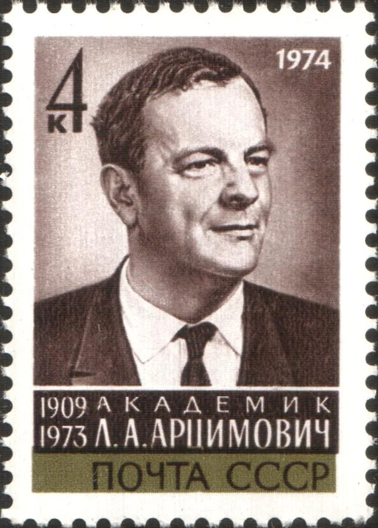
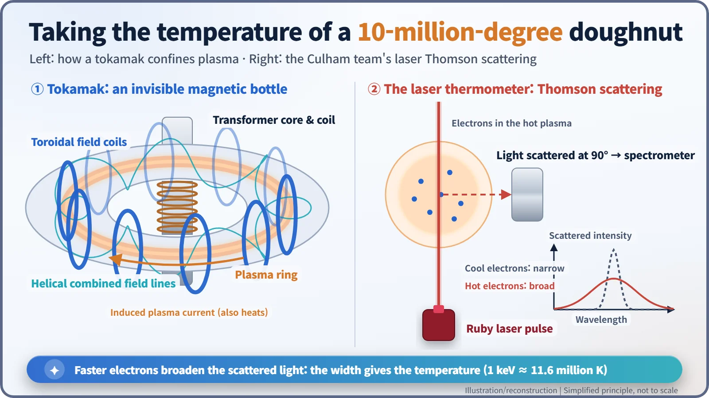
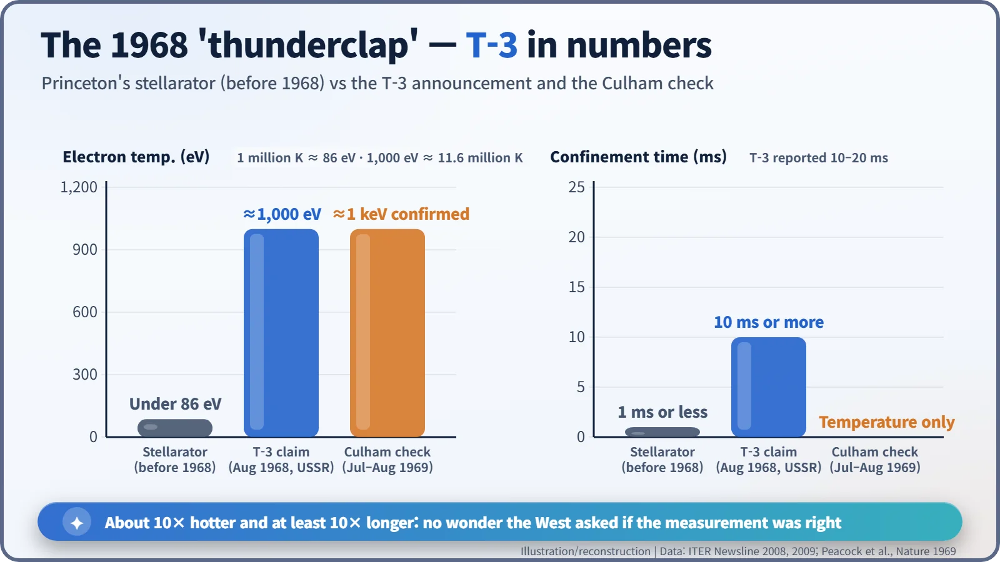
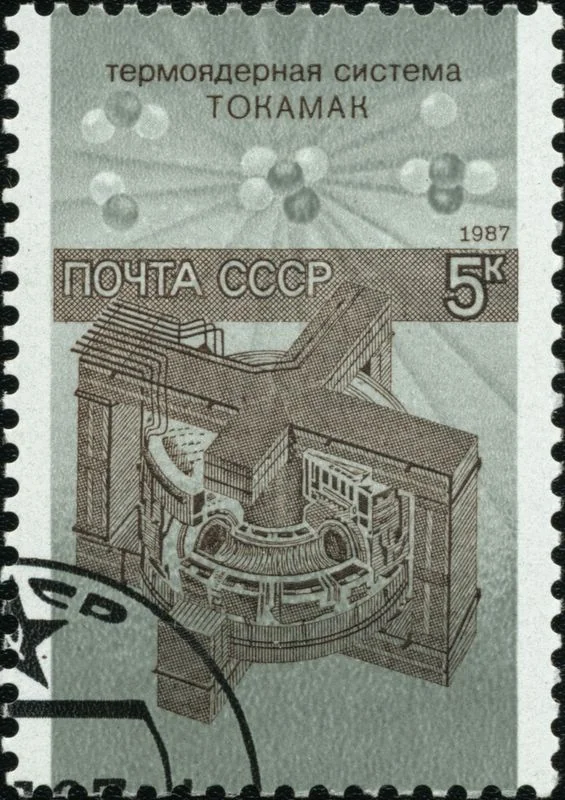

Nuclear History · 219
Taking the Temperature of a Ten-Million-Degree Doughnut — The Rise of the Tokamak (T-3, 1968–1969)
A Soviet claim few believed, a British laser thermometer, and 88 plasma shots in Cold War Moscow.
In August 1968 Soviet physicists reported that their T-3 tokamak had heated plasma to about ten million degrees, and few in the West believed it. In the summer of 1969 a British team from Culham took a laser "thermometer" to Moscow and confirmed the claim, setting off a worldwide rush to build tokamaks.
A thermometer for ten million degrees?
How do you take the temperature of something at ten million degrees? Any thermometer you push into it would vanish long before it gave a reading. Yet in the summer of 1968, Soviet physicists announced that they had reached exactly that kind of temperature inside a doughnut-shaped machine. The Western reaction was not applause but a pointed question: are you sure you measured it correctly? To answer it, a small British team packed a "laser thermometer" and travelled to Moscow at the height of the Cold War. That single measurement is how the tokamak became the leading design in fusion research.
A leaky bottle: fusion in the 1960s
Fusion releases energy by joining light atomic nuclei. To make it happen you need an extremely hot plasma (a gas in which electrons and nuclei have come apart), and you must hold that plasma away from every wall. So from the early 1950s the United States, Britain and the Soviet Union all began, in secret, to build "invisible bottles" made of magnetic fields.
Even after the research was declassified in 1958, progress was slow. Plasma leaked out far faster than theory predicted, a stubborn loss known as Bohm diffusion. According to a retrospective by the ITER Organization, Princeton's stellarator, the leading American machine, never exceeded one million degrees, and it never held its plasma for more than a thousandth of a second. [1]
The Soviets were taking a different route. In 1950–51 Andrei Sakharov and Igor Tamm sketched a doughnut-shaped magnetic trap, and at the Kurchatov Institute in Moscow the work was led by Lev Artsimovich (1909–1973). "Tokamak" is a Russian acronym for a "toroidal chamber with magnetic coils". The first tokamak, T-1, started operating at the end of 1958. [1] [6]

The "Plasma Olympics" in Siberia
From 1 to 7 August 1968, the IAEA's Third International Conference on Plasma Physics and Controlled Nuclear Fusion Research met at Akademgorodok, the science town near Novosibirsk. More than 400 participants from 24 countries attended what was nicknamed the "Plasma Olympics". There Artsimovich's team presented results from the T-3 tokamak: an electron temperature of about 1,000 eV (electronvolts, roughly ten million degrees), energy confinement of 10 milliseconds or more, and confinement at least about 50 times the Bohm limit. ITER's account says the presentation "came as a thunderclap". [1] [2]
The doubts were just as strong. Melvin Gottlieb, director of the Princeton Plasma Physics Laboratory, argued heatedly with Artsimovich. Perhaps, he suggested, the Soviet instruments had picked up a small population of runaway electrons, unusually fast particles, rather than the plasma as a whole. As one later ITER article put it, the claims were received "with considerable skepticism by fusion laboratories outside the Soviet Bloc". [1] [3]
A Cold War house call
Artsimovich's answer was unexpected. He invited the director of Britain's Culham Laboratory, Sebastian "Bas" Pease, to send a team and measure it independently. In December 1968 the UK Atomic Energy Authority (UKAEA) put the team together: spectroscopist Nicol Peacock, laser-scattering specialist Mike Forrest, 27-year-old Derek Robinson, Peter Wilcock, and technician Harry Jones, often called the "Culham Five". (One ITER article counts four.) [2] [3] [4]
With about five tonnes of equipment, the team had settled in at the Kurchatov Institute by around spring 1969. (One overview says they arrived in late 1968.) "We were a bit scared," Forrest recalled. The work was "frenetic", and nerves "were getting frayed". [2]
Their tool was laser Thomson scattering. Fire a laser pulse into a plasma and some of the light bounces off the electrons. The faster the electrons are moving, the wider the range of wavelengths in the scattered light. It is the Doppler effect, the same thing that changes the pitch of a passing ambulance siren. Measure the width of that spread and you get the temperature of the bulk of the electrons, not just a few runaways.

On 22 July 1969, Robinson wrote a short line in his lab notebook: "Indicates Te=1 K eV." A Polaroid photograph of the signal gave "totally unambiguous evidence of Thomson scattering". By early August the team had aimed their laser at about 88 plasma shots, and most of the temperatures fell in the ten-million-degree range. The Soviet claim held. (Strictly, 1 keV is about 11.6 million kelvin, so "ten million degrees" is a rounded figure.) [2] [3]
The results were published in Nature in November 1969. One of the five authors, V. V. Sannikov, was a Soviet researcher. According to a story often told, when the news reached the House of Lords, someone quipped: "I suppose they used a very long thermometer." [5] [3]

The tokamak rush
The effect was swift. In 1969 Princeton decided to convert its Model C stellarator into a tokamak. Renamed the Symmetric Tokamak (ST), it began experiments in May 1970 and by the following year had reproduced the Soviet results. Tokamaks were soon being built in many countries, including the United States, France, Japan and Germany, in what was called a "stampede". That line leads on to Europe's JET and to ITER, now under construction. [6] [4]

Measure first, believe later
Of course, T-3 was nowhere near a power plant. What it proved was more modest: a tokamak could hold a plasma fairly hot for a fairly long time. Still, at a time when the two Cold War blocs trusted each other very little, one scientist opened his laboratory and said "come and check", and a team of others carried their instruments across the Iron Curtain to do it. Decades later Forrest said the team felt "more than a tinge of pride in our 1969 achievement". Thomson scattering, UKAEA notes, is "still a key diagnostic for today's tokamaks". [2] [4]